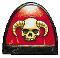
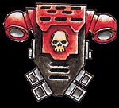

Imperial Forces |
Force Disposition Introduction |
Ork Forces |
|
To: ++ Inquisition Clearance Insufficient ++
From: ++ Inquisition Clearance Insufficient ++
Date: 013.M36
Subject: Adeptus Astartes, Exorcists Chapter
Thought for the day: Ruthlessness is the kindness of the wise.
Honoured Lord, it is with great pleasure I contact you to inform you of the success of our project. Minor setbacks aside, I can report that the first two companies of the Chapter created in this thirteenth founding are responding well to the daemonic possession therapy. Under controlled hexagramic conditions, the subjects were exposed to possession by minor creatures from the daemonic pantheon under the watchful eye of Ordo Malleus daemon hunters protected by sigils and wards of great power. Incense inimical to the summoned creatures was burned while chants of binding were continually intoned from the ++Liber Expurgatorius. Inquisition Clearance Insufficient ++.
|
| ||||||||||||||||||||||||||||||||||||||||||||||||||||||||
|
 Once the subject was exposed to the essence of the daemon, the creature was allowed to remain in the host body for twelve hours before being cast out by a daemon hunter. In some cases the resultant physical and psychological damage to the Space Marines was irreparable and we were forced to terminate, but the majority of the subjects survived the procedure and required only minor reconstructive surgery and corrective psychotherapy. After a period of recuperation, the subjects were instructed in the methods of combating the daemonic, trained in the use of the 666 verses of the Book of Exorcisms and equipped with the weapons of an Exorcist. The two companies were then put into action on a daemon infested world on the northern fringes of the Eye of Terror. With a squad of the Grey Knights held in reserve, the Exorcist Space Marines achieved a kill ratio of 97:1. Impressive under normal circumstances, but against the daemonic, I'm sure you'll agree that these figures clearly indicate that the procedure is both safe and effective. The test subjects adrenal production more than tripled and levels of the neurotransmitter Serotonin dropped drastically, resulting in heightened states of aggression and combat effectiveness. Only 1% of the Space Marine subjects re-succumbed to daemonic influence on the planet and I believe that, subject to careful monitoring, this Chapter might eventually be granted a base and limited autonomy within a reasonable time frame.  With this success behind us, I believe the time is right to begin the creation of a full Chapter of Exorcists. The technology is in place and the need for such troops has never been greater. The two test companies can be integrated into normal Chapter organisation with the minimum of fuss and the resulting Chapter of Exorcists could be operational within less than fifty years. By then, the minor side effects that have manifested in a number of test subjects should hopefully be eliminated. I remain your humble servant Lauram Clelland Genetor-Major, Xenobiologis | |||||||||||||||||||||||||||||||||||||||||||||||||||||||||